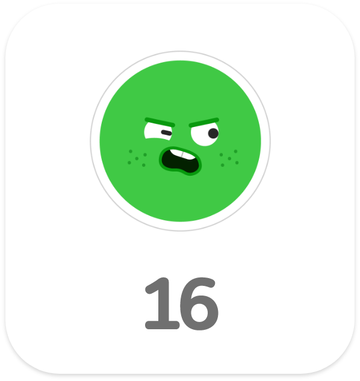

마음 달력
하루마다 느꼈던 감정을 기록하여,
자신의 기분을 표현할 수 있도록 합니다.
하루마다 느꼈던 감정을 기록하여,
자신의 기분을 표현할 수 있도록 합니다.
마음 스티커 종류
서비스 알아보기
다섯가지 마음 스티커 중
하나를 선택하여 매일 나의 감정을
달력에 기록할 수 있습니다.
달별로 그 날의 내가 어떤 기분이었는지
살펴볼 수 있습니다.

일랑톡톡은 감정에 대한 이해가 부족하고, 적절한 감정 표현에 서툰 아이들에게
아이들 스스로가 느끼고 있는 감정에 대해 이해하고 명확히 표현할 수 있게 도와줍니다.